Cross-sensor SR is not just sharpening. The output must preserve measured scene layout, recover plausible rare-feature detail, and match the target sensor domain without inventing unsupported structures.
RareFlow uses a frozen SD3 backbone, trainable LR-conditioned ControlNet residuals, learned alpha gates, semantic guidance from text, and a consistency-guided objective with frequency, color, and perceptual terms.
On paired RTS data, RareFlow leads six of eight reported metrics — FID 116.16, SAM 3.86, SSIM 0.59, LPIPS 0.36, DISTS 0.30, NIQE 5.36 — and is preferred by domain experts.
The RTS benchmark pairs 10 m Sentinel-2 imagery with 2 m Maxar targets across Arctic regions. About 800 image pairs come with VLM-generated captions for semantic guidance.
Beyond Arctic thaw slumps, RareFlow transfers to BreizhSR and SEN2NAIP, improving FID and several fidelity / perceptual metrics on both public cross-sensor SR benchmarks.
Remote-sensing SR can create images that look realistic but do not match the true landscape. This is risky for rare geomorphic features such as retrogressive thaw slumps, where a plausible texture can still be scientifically wrong.
RareFlow treats the task as target-domain reconstruction: the output should preserve the LR scene layout, add plausible fine detail, and match the target sensor style.
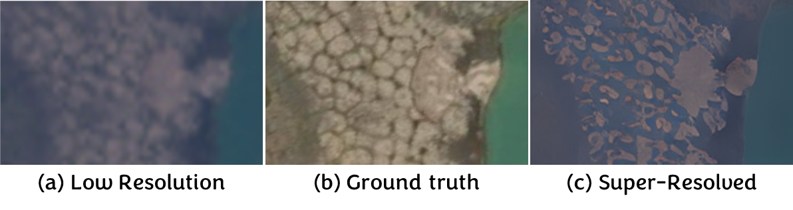
High spatial resolution satellite imagery is critical for monitoring fine-scale Earth surface processes, but is often limited by cost and revisit time. This work studies cross-sensor super-resolution (SR) to reduce this gap by translating 10 m Sentinel-2 imagery into 2 m Maxar-like imagery in a data-scarce, domain-shifted setting, with a focus on rare geomorphic features such as retrogressive thaw slumps (RTS). We propose RareFlow, a semantic-guided generative AI framework for cross-sensor super-resolution based on a flow-matching formulation, designed to produce visually plausible and physically reliable high-resolution images.
RareFlow uses dual conditioning to guide the generation process: (1) a gated ControlNet that preserves scene geometry from low-resolution (LR) input, and (2) text-based semantic guidance that injects contextual information when the target phenomenon is rare. To ensure high-fidelity outputs, we introduce a multifaceted loss function that anchors the output to the high-resolution (HR) ground truth by jointly enforcing frequency alignment, perceptual similarity, and color consistency. RareFlow's performance is systematically evaluated on a newly curated benchmark of multi-sensor satellite imagery for rare Earth feature detection, and its generalizability is demonstrated on two public remote sensing benchmarks, SEN2NAIP and BreizhSR. Human evaluation with domain experts is also conducted to further verify RareFlow's effectiveness in generating high-fidelity super-resolved images for scientific analysis.
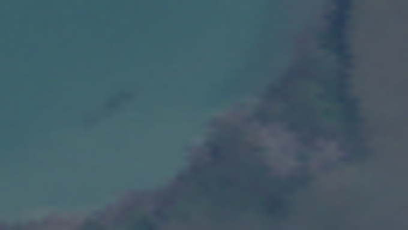
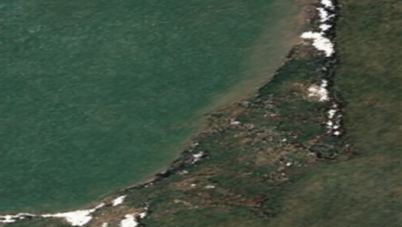
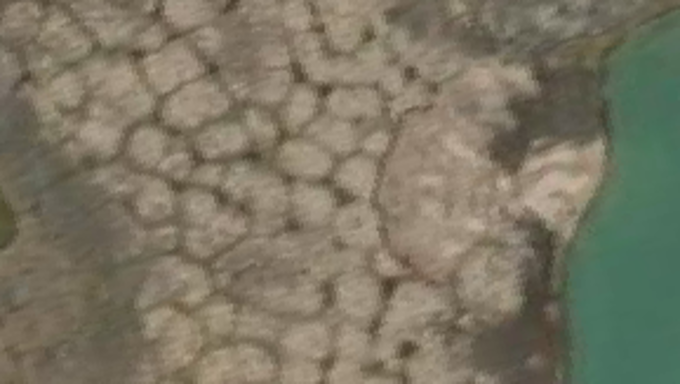
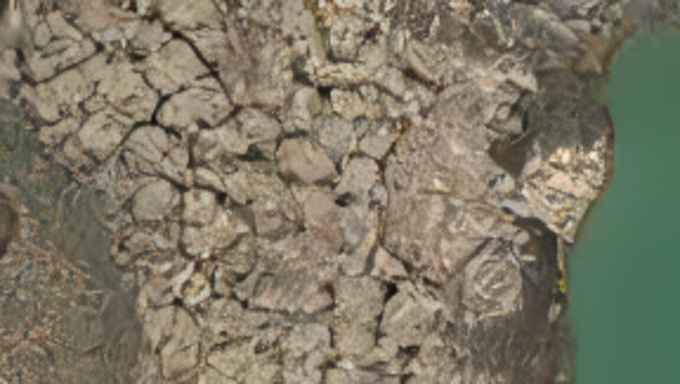
RareFlow balances semantic guidance from text with observation guidance from the LR image through learned alpha gates.
The loss combines flow-matching regression with FFT frequency alignment, CIELAB color consistency, and LPIPS perceptual similarity.
The paper builds a multi-sensor RTS benchmark using Sentinel-2 LR inputs and Maxar HR targets under real sensor and time mismatch.
RareFlow is also evaluated on BreizhSR and SEN2NAIP to test transfer beyond the Arctic RTS setting.
RareFlow keeps the VAE and SD3 MM-DiT backbone frozen. A trainable ControlNet consumes the aligned LR latent and emits residual features for selected backbone blocks. Learned alpha gates scale these residuals before injection, so the model can decide how strongly to trust LR structure at each block.
During training, the HR target is used to create the clean latent and compute consistency losses. During inference, the HR branch is removed; RareFlow only uses the LR image and a text prompt to sample the SR output.
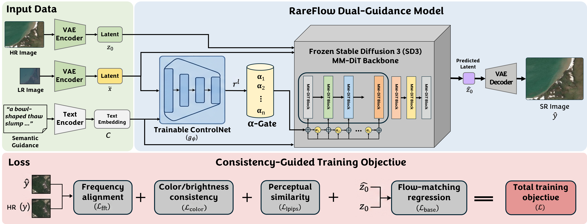
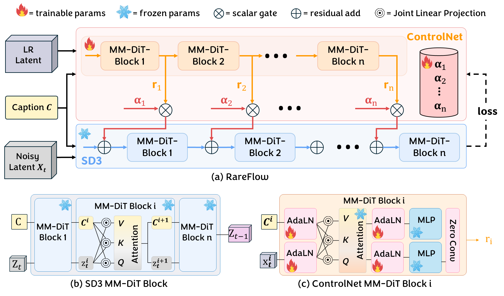
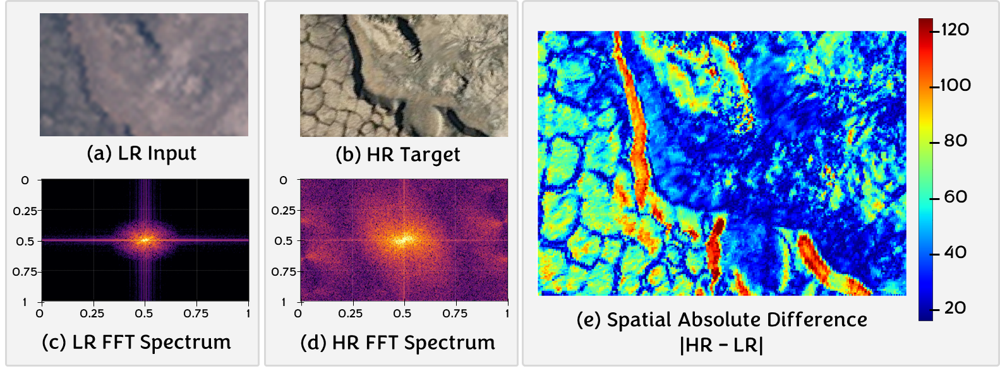
| Model | PSNR ↑ | SSIM ↑ | SAM ↓ | LPIPS ↓ | DISTS ↓ | FID ↓ | NIQE ↓ | MANIQA ↑ |
|---|---|---|---|---|---|---|---|---|
| ZoomLDM | 17.23 | 0.26 | 12.96 | 0.60 | 0.59 | 352.11 | 18.10 | 0.19 |
| SeeSR | 18.78 | 0.50 | 12.26 | 0.46 | 0.38 | 302.36 | 10.78 | 0.36 |
| AdcSR | 18.59 | 0.58 | 12.31 | 0.40 | 0.37 | 187.18 | 8.38 | 0.28 |
| MISR-S2 | 18.39 | 0.50 | 12.72 | 0.54 | 0.43 | 254.70 | 13.55 | 0.33 |
| SAMSR | 18.36 | 0.54 | 12.80 | 0.48 | 0.39 | 189.01 | 11.84 | 0.32 |
| OpenSR | 17.29 | 0.51 | 12.59 | 0.41 | 0.36 | 225.62 | 9.80 | 0.25 |
| RareFlow | 18.76 | 0.59 | 3.86 | 0.36 | 0.30 | 116.16 | 5.36 | 0.31 |
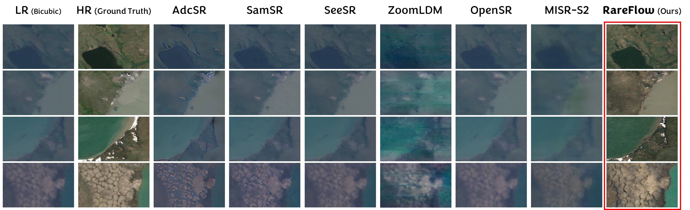
The full model combines semantic guidance, consistency-guided training, and alpha-gated structural conditioning. This combination gives the strongest overall result: the model achieves the best SSIM, FID, and NIQE, and remains second-best or tied second-best on SAM, LPIPS, DISTS, and MANIQA. These results suggest that the components are complementary. Pre-trained ControlNet supports structural consistency, captions improve target-domain realism, the consistency-guided objective stabilizes caption-guided generation, and the alpha-gate helps balance conditioning strength.
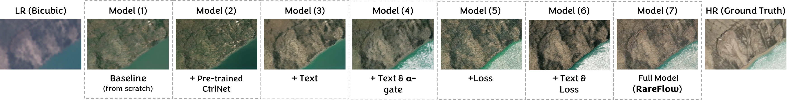
The benchmark pairs Sentinel-2 Level-1C imagery with Maxar imagery to learn a 10 m to 2 m cross-sensor mapping for retrogressive thaw slump regions across Arctic sites.
The setting is hard because LR-HR pairs can be spatially shifted, temporally mismatched, cloud affected, very small, and limited in number. The paper reports roughly 800 training images.
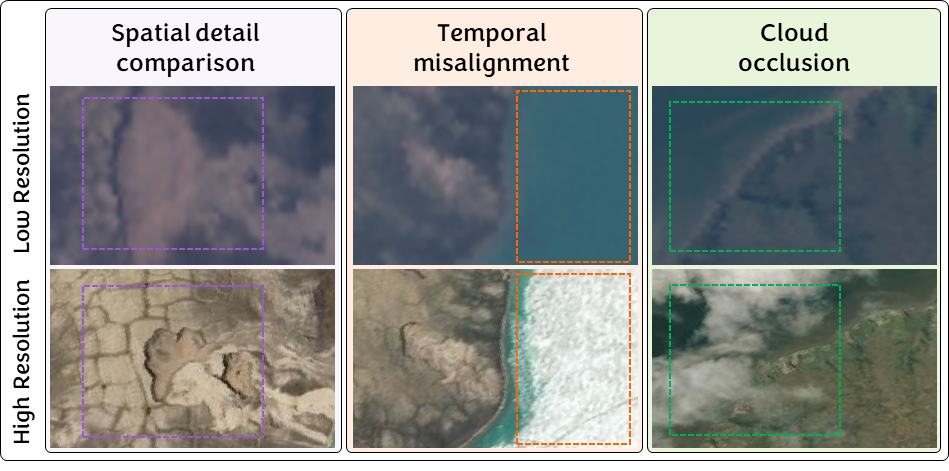
Experts scored outputs from 1 to 10 with attention to RTS boundaries. RareFlow reached a mean score of 4.6, above AdcSR at 3.2, SeeSR at 2.5, and the LR input at 2.3. HR reference remained the upper bound at 6.3.
Reported agreement was substantial: Krippendorff's alpha = 0.736, Kendall's W = 0.841, and Spearman's rho = 0.673.
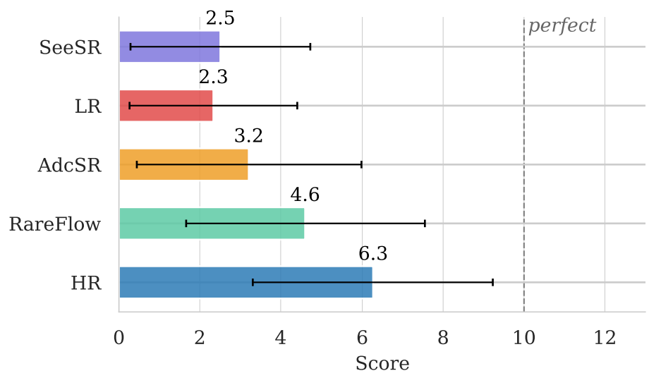
RareFlow was trained and tested on two public cross-sensor SR benchmarks to evaluate transfer beyond Arctic thaw slump imagery.
| Dataset | Method | PSNR ↑ | SSIM ↑ | FSIM ↑ | LPIPS ↓ | DISTS ↓ | FID ↓ | NIQE ↓ | MANIQA ↑ |
|---|---|---|---|---|---|---|---|---|---|
| BreizhSR | RareFlow | 11.30 | 0.18 | 0.53 | 0.52 | 0.31 | 245.30 | 7.95 | 0.32 |
| BreizhSR | MISR-S2 | 11.28 | 0.23 | 0.54 | 0.63 | 0.36 | 254.10 | 9.36 | 0.22 |
| SEN2NAIP | RareFlow | 14.44 | 0.29 | 0.57 | 0.59 | 0.32 | 214.50 | 6.23 | 0.19 |
| SEN2NAIP | OpenSR | 12.50 | 0.24 | 0.61 | 0.61 | 0.36 | 230.95 | 6.76 | 0.20 |